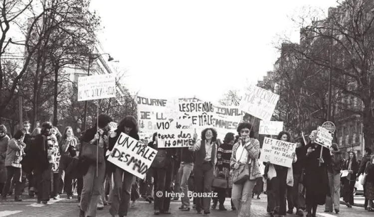

The evolution of feminism in Europe
the history of feminism from its very beginnings in France in 1791 and its evolution in the years that followed.
The evolution of feminism, an informative site about feminism. It will show you how feminism has evolved over time. Then it will tell you about an important figure of feminism. And to finish, it will present you a work that deals with the subject of feminism.
the history of feminism from its very beginnings in France in 1791 and its evolution in the years that followed.
Angela Merkel the first German chancellor and the most powerful woman in politics. Discover her story.